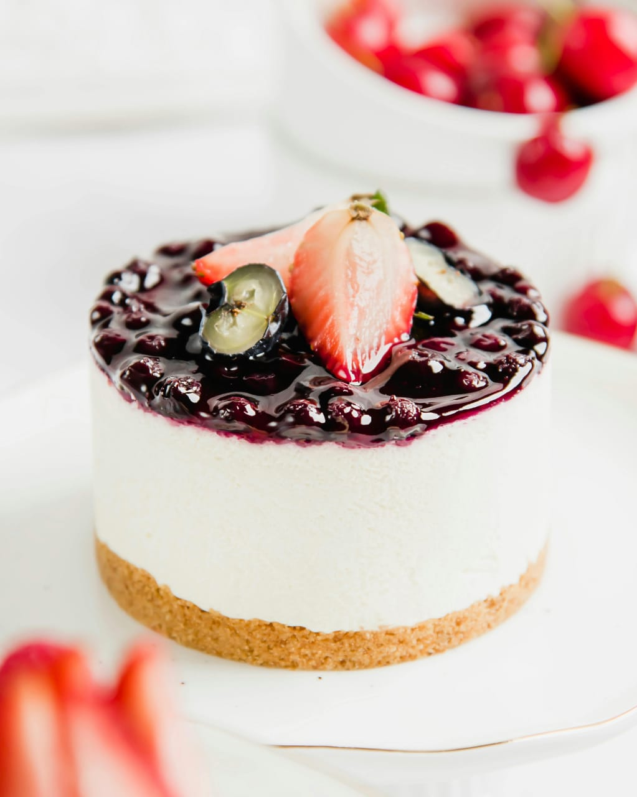

CHEESECAKE DE FRUTOS ROJOS
Dificultad: Media
Duración: 60 minutos

INGREDIENTES
PARA EL RELLENO
- Queso crema 750g.
- Harina 130 g.
- Azúcar 250 g.
- Crema de leche 325 cc.
- Huevos 8 unid.
- Manteca fundida 130 g.
- Ralladura de limón.
PARA LA MASA
- Galletitas secas 250 g.
- Manteca 125 g.
DULCE DE FRUTOS ROJOS
- Frutas 500 g.
- Azúcar 500 g.
- Jugo de limón 10 g.
- Pectina optativa 10 g.
PROCEDIMIENTO
- Para la base, mezclar las galletitas en una procesadora hasta que quede polvo. Agregar la manteca derretida y colocar en el molde.
- Para el relleno, mezclar azúcar con el harina y reservar.
- En un bol, batir el queso crema, incorporar los huevos, luego la crema de leche e integrar los secos. Por último, la manteca fundida y la ralladura. Cocinar a 100°C hasta que la preparación haya coagulado.
- Para el dulce, macerar durante 12 horas el azúcar con la fruta. Luego, cocinar hasta que llegue a 104°C.